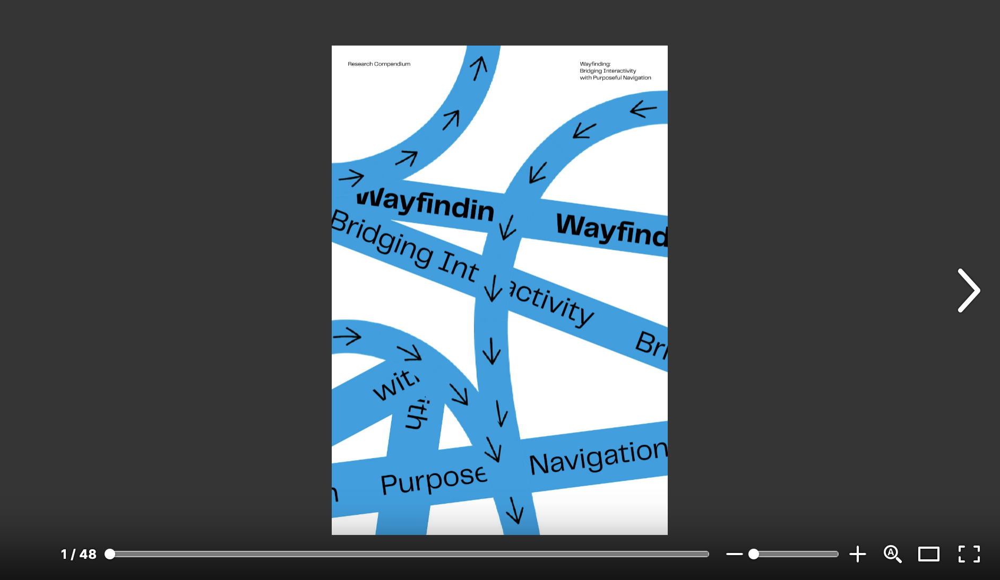
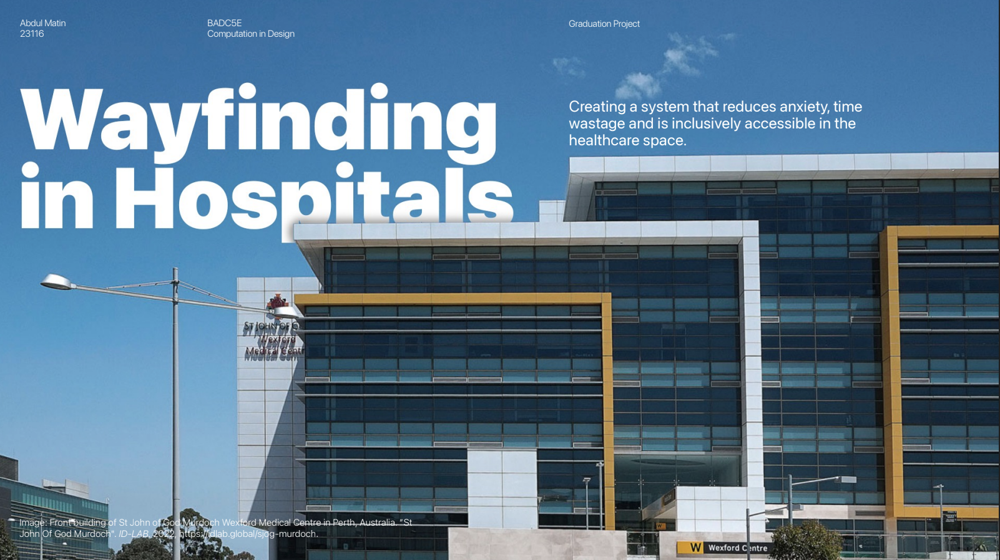

Beginning the Semester
Oh $#1+,
here we go again!
My summer and bank account were kept busy with my internship but I had thoughts when revisiting my research topic. Wayfinding was an area of design that didn’t excite me anymore but after rereading my compendium, I found that there was an opportunity to do something within the healthcare sector still.
 You may view a read-only version of my compendium here.
Based on some light reading, I decided to amend my angle—instead of tackling a brief of “creating a better wayfinding for hospitals", I’m deciding to “create something that would ease anxiety in a sterile environment”. Although similar in context, it provides me with more breathing room to diverge before converging. And more importantly, it doesn’t reduce me to just creating another branded wayfinding system (I recognise that this on its own is not an easy task).
 You may view the read-only version of my presentation here.
Thursday sharing session gave me my next steps forward; that is to inquire with people who’ve had recent experiences in the hospital with regards to wayfinding and to gather a list of visual references to aid in my search for (for a lack of a better term) a better thing to make.
3 Ways In
Readings
I’m currently reading two books for further research into humanising tech. Hopefully, that leads me to write more for my dissertation and helps me move in the right direction.
Enquiries
I have a bunch of friends working in the health sector, so I’m hoping to shed some light on what it actually feels like in hospitals. However, I’m not sure what exactly to ask so I’ll have to write my enquiries down first.
Observation
I also am interested in how it feels like to visit a hospital for the
first time. To experience this, I’m considering
visiting a hospital and noting down my thoughts and getting in
contact with individuals who have been to hospitals.
More importantly, I would prefer to get a subject who’s early into
their hospital experience and follow them closely to gauge how things
change over the course of the year.
Visual Reference
Images above make up a moodboard of interesting projects found in the
book ‘Left, Right, Up, Down; New Directions in Signage and
Wayfinding’—grouped into categories and placed according to possible
linkages amongst themselves.
Aside from that, I’m also browsing three different books to look for
visual references as to what’s already been done within the
tech+wayfinding space.
Class Activity: Treemapping
To my surprise, my classmates were leaning towards the bottom left segment of tech implementations while I’m currently focusing on the emotional and behavioural aspects of how we navigate in tough situations.
Makes sense why they’ve chosen physical implementations rather than
focus on the underlying issue. These are what have been voted for;
• Evolving signage (2 votes)
• Robots (3 votes)
• Movement of indv (3 votes)
• Apps (1 vote)
• Range of users (2 votes)
While ignoring the number of votes, I may choose to remove the focus on elderlies specifically for the physical limitations of hospital users far expand beyond grouping by age. And Apps do not excite me as a finalised product.
My mood board has also revealed linkages and areas to broaden upon;
• Evolving systems
• Coloured-based environments
• New tech, existing spaces
• Cultural relevance
• Materialism
The only overlapping theme is evolving systems to which I have 2 queries;
• Are there many cases that explore materiality into digital outputs?
• What are the limitations of evolving signages?
I’ll first explore this before moving on to the other queries.